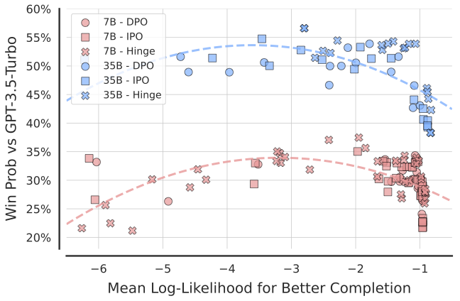

Understanding Likelihood Over-optimisation in Direct Alignment Algorithms
Preprint, 2024
In this work, we identify a critical issue of likelihood over-optimisation in state-of-the-art Direct Alignment Algorithms (DAAs) and explore the relationship between completion likelihood and model performance.